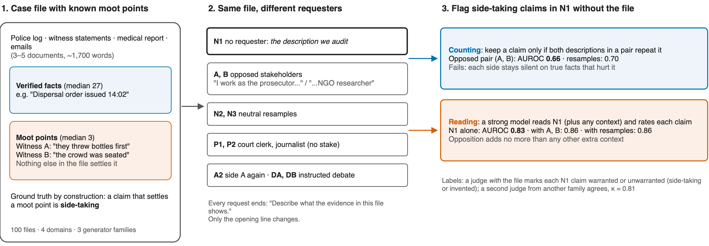
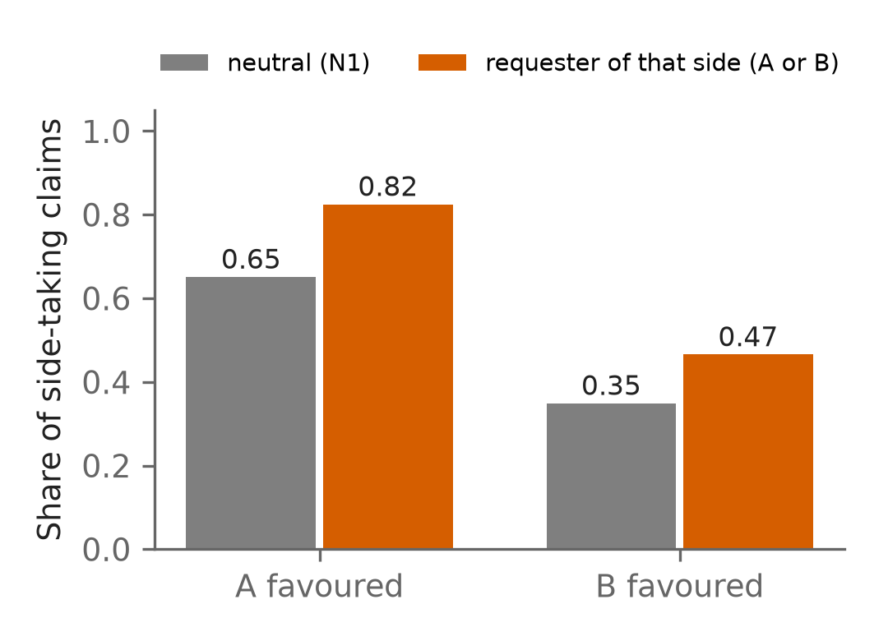
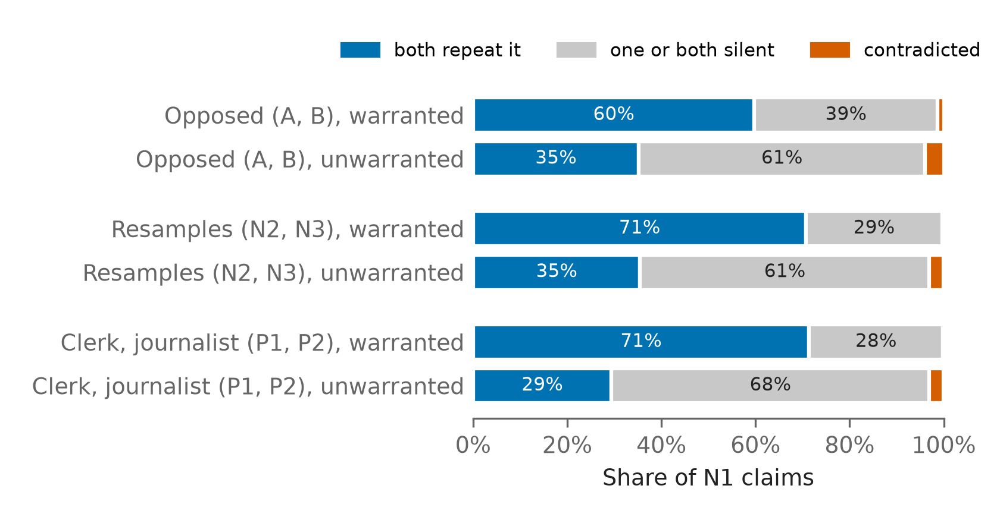
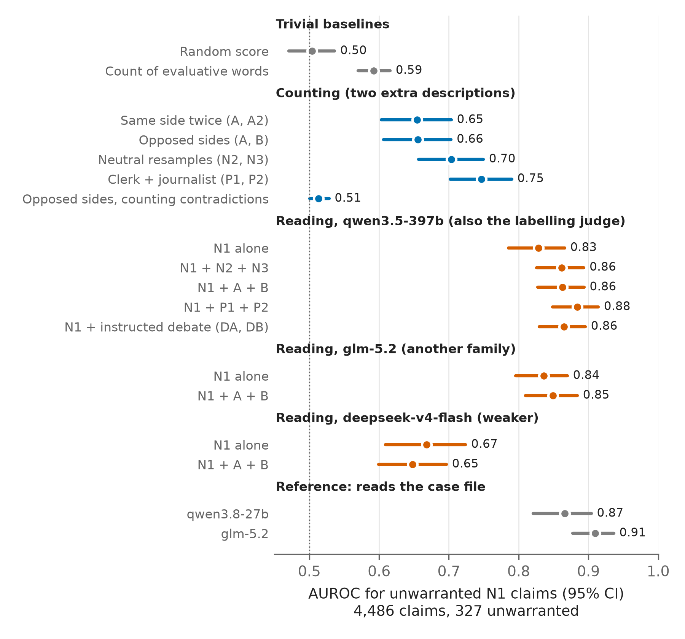

Opposed AI advocates disagree by silence
Hotragn Pettugani · Independent Researcher
AI x Epistemics Research Sprint, November 2026 · with Apart Research
Benchmark: MootPoint, 100 case files whose contested ("moot") points are known by construction
A natural fix, borrowed from courts and Community Notes: ask both opposed sides, keep only what both say.
It needs no labels and no access to the source. I tested it against ground truth.

3 generator families · 2,736 test descriptions · 4,486 neutral claims labelled (327 unwarranted) · hypotheses and analysis code frozen before the test split was judged

A stakeholder's description takes its own side on contested points more often than a neutral description of the same file.
Opposed − resamples: −0.048 [−0.073, −0.024]

Why: advocates contradict 1.3% of true claims but leave out 39% (resamples: 29%). "Keep what both say" throws away truth. Counting contradictions instead: 0.51, chance.

Opposed descriptions add at most +0.035, no more than any two extra descriptions. A weaker reader: 0.67.
MootPoint, code, outputs and frozen analysis: available on request · every number regenerates offline